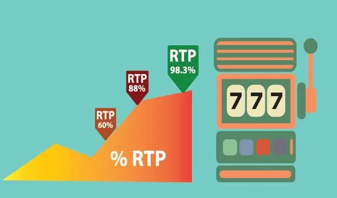

Return to player prozentsatz und Bankvorteil erklärt
Jeder, der in ein Casino geht, egal ob Sie in einem Online-Casino oder in einem landbasierten Casino spielen, hofft natürlich, etwas Geld zu gewinnen. Die Wahrheit ist jedoch, dass nur 5 % aller Spieler, die täglich ein Casino besuchen, das Casino tatsächlich mit mehr Geld verlassen, als sie zu Beginn hatten. Der Return to player prozentsatz Gewinn oder der Bankvorteil spielt hier eine entscheidende Rolle
Die Menschen sehen Casinos manchmal als besondere Einrichtungen. Sie werden als Orte angesehen, an denen man leicht etwas Geld gewinnen kann.. Dabei vergessen sie, dass Casinos auch nur Unternehmen sind. Und Unternehmen sind nun einmal darauf ausgerichtet, Gewinne zu erzielen. Das Kasino ist da keine Ausnahme.
Um sicherzustellen, dass tatsächlich ein Gewinn erzielt wird, haben die Spieleentwickler bestimmte Einstellungen an den Spielen, die sie für das Casino entwickeln, so angepasst, dass es immer einen kleinen Vorteil für das Casino gibt. Kein Spiel ist ohne diesen Vorteil, der besser als Bankvorteil oder Casinovorteil bekannt ist. Egal, welches Spiel Sie spielen und wie viel Sie gewinnen, auf lange Sicht wird das Casino immer einen Gewinn aus dem betreffenden Spiel erzielen. In diesem Artikel erfahren Sie, wie dies möglich ist, und erhalten ein besseres Verständnis für zwei wichtige Begriffe, nämlich Casino-Bankvorteil und Return To Player Prozentsatz.
Was genau ist der bankvorteil des casinos?
Bei jedem Spiel, das Sie im Casino spielen können, hat das Casino einen kleinen Vorteil gegenüber den Spielern, die das Spiel spielen. Um zu verdeutlichen, wie das funktioniert, lassen Sie uns mit einem Beispiel beginnen.
Angenommen, Sie möchten Roulette spielen. Dabei entscheiden Sie sich für das europäische Roulette. Beim europäischen Roulette wird nur eine einzige Null verwendet. Bei einer anderen Roulette-Variante, dem amerikanischen Roulette, gibt es neben der einfachen Null auch die Doppelnull.
Wenn Sie ausschließlich auf die Zahlen spielen, haben Sie 36 Wettmöglichkeiten. Sie können auf die Zahlen 1 bis 36 setzen, aber wenn Sie gewinnen, erhalten Sie nicht das 36-fache Ihres Einsatzes, sondern nur das 35-fache.
Theoretisch hat jede Zahl die gleiche Chance, zu fallen. Angenommen, Sie spielen 36 Spielrunden und in jeder Runde fällt eine andere Zahl. Sie haben immer auf dieselbe Zahl gesetzt. Dann haben Sie nach 36 Runden €36,- verloren, aber Sie haben mindestens einmal gewonnen. In diesem Fall gewinnen Sie €35,- haben aber €36,- gesetzt. Der Vorteil dieses einen Euros ist für das Casino. Der Bankvorteil und das Return to PLayer prozentsatz wird immer in Prozenten angegeben.
Mehr Return to player prozentsatz
Beim europäischen Roulette hat das Casino einen Bankvorteil von 2,71 %. Da beim amerikanischen Roulette eine zusätzliche Wettoption, nämlich die Doppelnull, verwendet wird, ist der Bankvorteil bei dieser Variante mit 5,27 % noch höher.
Jedes Spiel im Casino hat einen Bankvorteil , und tatsächlich hat jede Wette, die Sie bei einem beliebigen Spiel machen können, einen Bankvorteil für das Casino. In der Praxis bedeutet dies in der Regel zwei Dinge:
- Der Ausdruck „Das Casino gewinnt immer“ ist wahr. Vor allem, wenn man sie über einen längeren Zeitraum hinweg betrachtet.
- Je länger Sie spielen, desto größer ist das Risiko, dass der Bankvorteil Ihre Gewinne auffressen wird.
Natürlich können Spieler trotz dieses Bankvorteil s einfach Glück haben und Geld gewinnen. Sie können sogar sehr viel Geld gewinnen. Das Beste, was ein Spieler tun kann, der viel Glück hat und einen hohen Betrag gewinnt, ist, das Casino sofort zu verlassen. Wenn er weiterspielt, ist die mathematische Erwartung, basierend auf dem Bankvorteil , dass er seine Gewinne wieder verliert.
Welches sind die spiele mit dem höchsten und dem niedrigsten bankvorteil ?
Jedes Spiel im Casino hat einen eingebauten Bankvorteil , der jedoch nicht bei jedem Spiel gleich hoch ist. Beim Roulette beträgt der Bankvorteil mindestens 2,71 % und kann bis zu 5,27 % betragen, wenn Sie mit amerikanischem Roulette spielen. Darüber hinaus haben auch die Wetten beim Roulette ihre eigenen Bankvorteil e. Sidebets zum Beispiel (bei jedem Spiel) haben die höchsten Bankvorteil.
Dies kann sich manchmal zu einem Bankvorteil von mehr als 20 % summieren. Er kann aber auch noch höher ausfallen! Keno hat zum Beispiel einen Bankvorteil von 29 % und Money Wheel-Spiele haben einen Bankvorteil von 22 %. Videospielautomaten, Spielautomaten und Spielautomaten, die zu den beliebtesten Spielen im Casino gehören, haben einen durchschnittlichen Bankvorteil von 15 %.
Die niedrigsten Prozentsätze sind bei Video Poker und Blackjack zu finden. Beim Videopoker kann der Bankvorteil bis zu 0,44 % betragen und beim Blackjack liegt der niedrigste Bankvorteil bei 0,5 % . Diese Prozentsätze werden jedoch nur erreicht, wenn Sie nach einer grundlegenden Strategie spielen. Videopoker und Blackjack gehören zu den wenigen Spielen, bei denen nicht nur Glück, sondern auch ein wenig Geschick den Bankvorteil senken kann. Aus diesem Grund werden Sie niemals professionelle Spieler sehen, die ein anderes Spiel als Video Poker oder Blackjack spielen, zum Beispiel.
Retrun To Player Prozentsatz
Wie jedes andere Spiel im Casino haben auch Slots, Spielautomaten und Video-Slots einen Bankvorteil . Dieser Bankvorteil ist jedoch nicht bei jedem Spiel gleich und wird daher unterschiedlich angezeigt. Anstelle eines einzigen festen Prozentsatzes, wie es beispielsweise beim Blackjack der Fall ist, gibt es für jeden Video-Spielautomaten und jede Slotmaschine einen Retrun to Player-Prozentsatz (RTP-prozentsatz). Der RTP gibt an, wie viel der Spieler in Form von Gewinnen zurückbekommt.
Angenommen, Sie setzen €100,- an einem Video-Spielautomaten ein. Das Spiel zeigt an, dass der RTP 96 % beträgt. Dann müssten Sie theoretisch erwarten, dass Sie für €100,- einen Betrag von €96,- an Gewinnen aus dem Spiel zurückbekommen. Leider trifft diese theoretische Berechnung nicht zu, wenn Sie nur eine Stunde oder ein paar Stunden spielen. Das liegt daran, dass der RTP über Zehntausende von Drehungen berechnet wird, und kein Spieler hält so viele Drehungen durch.
Der RTP ist also nichts weiter als ein Anhaltspunkt, der Ihnen, dem Spieler, eine Vorstellung von der Art des von Ihnen gewählten Video-Slots vermittelt. Es gibt keine Garantie dafür, dass Sie während des Spiels tatsächlich 96 % Ihrer Einsätze in Form von Gewinnen zurückerhalten.